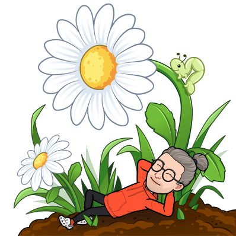

Coeur Diamant
Enfin une application intuitive qui t’interroge et t’amène à trouver tes propres réponses par toi-même. La vie est un jeu régi par des règles – les lois naturelles – que tu dois apprendre à respecter, la règle d’or étant d’accepter le fait que l’intelligence infinie qui t’enseigne – ton âme – communique avec toi par le canal de ton cœur. Donner un sens à ta vie, dialoguer avec tes guides, devenir une plus belle version de toi-même, vivre dans l’abondance, comprendre en quoi consiste l’ascension, accéder à la 5ème dimension, autant de questions existentielles qui t’intriguent plus ou moins consciemment. Grâce à - Cœur Diamant - et aux 44 miroirs de la réalité ordinaire qui la composent – où se reflètent occasionnellement le rêve, l’imaginaire, voire le merveilleux – , prépare-toi à vivre des expansions de conscience.
Voir plusLe coin des poètes
Le Paradis Retrouvé est un texte de ma composition, un poème puisqu’il est construit en rimes, qui ne demande qu’à être chanté sur de la musique, ce qui n’est pas dans mes cordes, pas plus vocales que instrumentales.
Voir plus
Roue de Guérison des Tarots
Auto soin universel
Un soir, je me suis endormi en demandant à mes guides de m’aider à élaborer un auto soin qui parlerait au plus grand nombre du fait qu’il serait simple à pratiquer et qu’il répondrait à tous les besoins, bref un auto soin universel. Le lendemain matin, en ouvrant les yeux, j’ai reçu un flash. Mes guides venaient de me télécharger le fruit de leurs recherches et j’avoue que le résultat dépassait toutes mes attentes. Recourir à la symbolique des arcanes majeurs du Tarot – l’Ancien Tarot de Marseille en ce qui me concerne – pour créer une Roue de Guérison autour d’une Fleur de Vie, je n’y aurais jamais pensé tout seul.
Voir plusSphère de Lumière
En attendant d’élever en conscience ton taux vibratoire suffisamment haut pour que la négativité qui t’entoure ne puisse plus t’atteindre et perturber ton énergie, je te conseille de te fabriquer ce que d’aucuns appellent une coque, une bulle ou un bouclier de protection énergétique. Je préfère employer les termes de Sphère de Lumière que je trouve beaucoup plus positifs. Il s’agit de visualiser dans l’astral une poche d’énergie qui enveloppe ton aura, de forme ovale mais modulable, qui exfiltre tout ce qui est négatif en toi et qui réverbère tout ce qui est négatif autour de toi. La Sphère de Lumière ainsi obtenue est connectée à ta propre énergie, elle-même rechargée par ton double éthérique durant ton sommeil. Elle agit comme un vortex, et ne s’active que si besoin est. Je te rassure, elle n’interfère en aucune façon dans tes ressentis, tes émotions et tes sentiments.
Voir plus
J'interprète tes rêves
Je te propose d’interpréter tes rêves de la même façon que j’interprète mes tarots lorsqu’on me consulte à la seule différence, mais pas des moindres, que je me sers de tes propres images.
Voir plus
Question/réponse
avec les nombres

Je te propose de répondre à tes questions en interprétant une séquence de trois nombres choisis par tes soins entre 1 et 22, par exemple 4-19-12, 8-15-1, 21-7-11 etc.
 Voir plus
Voir plus
Question/réponse
avec les tarots

Je te propose de répondre à tes questions en interprétant les tarots, en l’occurrence les arcanes majeurs de l’Ancien Tarot de Marseille, exactement comme je procède lorsqu’on me consulte par téléphone.
 Voir plus
Voir plus